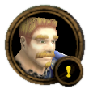

Your screenshot, Marshal Dughan giving The Jasperlode Mine. All four stages play the addon's real cues for 76-accept (20.3 s, five cues) on one clock. It rests on the cue from your screenshot.
What you have installed: text under the player, speaker name in front.
Player unchanged. Subtitles move down to the cinematic spot, drop the name and break evenly.
The words hang under the player in the same stone and trim, so it reads as one object.
Player hidden with Spoken's own setting. Portrait, name and words together, no panel.
